| Caption | Sound Events Roll | T2A-Adapter (Ours) |
T2A-ControlNet (Ours) |
AudioComposer | EzAudio-XL | GT |
|---|---|---|---|---|---|---|
| People speak and clap, a child speaks and a camera clicks. |
Female speech, woman speaking: 0.00s-3.97s, 7.91s-8.16s, 8.19s-9.65s
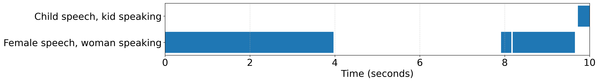
Child speech, kid speaking: 9.72s-10.00s |
|||||
| Background noise, tapping, and cat sounds are interspersed with purring. |
Cat: 0.98s-2.29s, 9.03s-10.00s
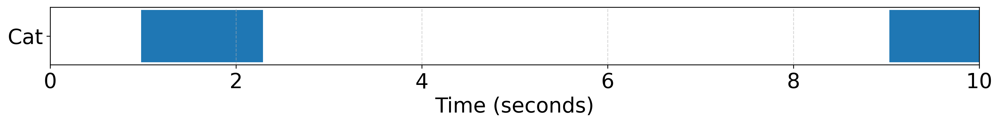
|
|||||
| Animals, dogs, and people are growling, shouting, and speaking. |
Dog: 0.01s-0.17s, 0.72s-1.53s, 1.98s-3.14s, 3.57s-4.56s, 4.87s-5.96s, 6.39s-7.62s, 8.07s-8.98s, 9.30s-9.88s
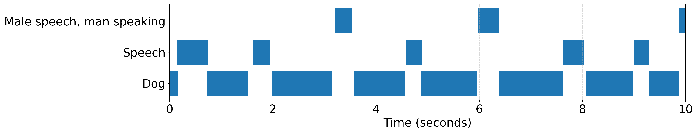
Speech: 0.15s-0.74s, 1.61s-1.95s, 4.58s-4.89s, 7.63s-8.02s, 9.01s-9.29s Male speech, man speaking: 3.20s-3.53s, 5.98s-6.38s, 9.88s-10.00s |
|||||
| Water flows and dishes clatter with child speech and laughter. |
Child speech, kid speaking: 0.00s-1.50s, 1.73s-2.12s, 2.94s-3.54s, 7.80s-8.49s
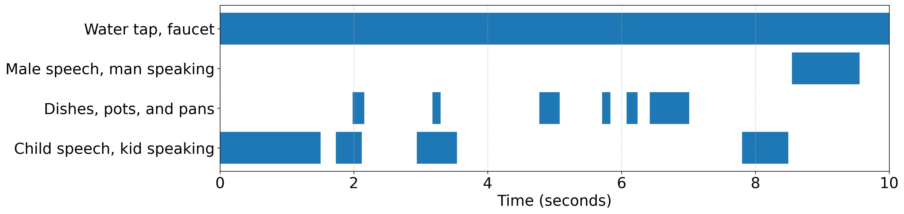
Dishes, pots, and pans: 1.98s-2.16s, 3.18s-3.30s, 4.77s-5.08s, 5.71s-5.83s, 6.08s-6.24s, 6.42s-7.01s Male speech, man speaking: 8.55s-9.56s Water tap, faucet: 0.00s-10.00s |
|||||
| Speech babble and clattering dishes and silverware can be heard, along with a child's voice. |
Dishes, pots, and pans: 0.85s-0.97s, 1.39s-1.50s, 7.72s-7.87s
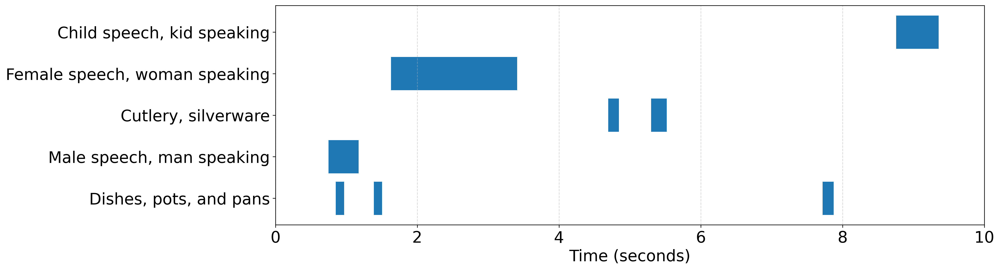
Male speech, man speaking: 0.75s-1.17s Cutlery, silverware: 4.69s-4.84s, 5.30s-5.52s Female speech, woman speaking: 1.63s-3.41s Child speech, kid speaking: 8.76s-9.35s |
| Caption | Loudness | T2A-Adapter (Ours) |
T2A-ControlNet (Ours) |
EzAudio-L-Energy | EzAudio-XL | GT |
|---|---|---|---|---|---|---|
| A man speaks and an arrow is shot as more speech is heard. | 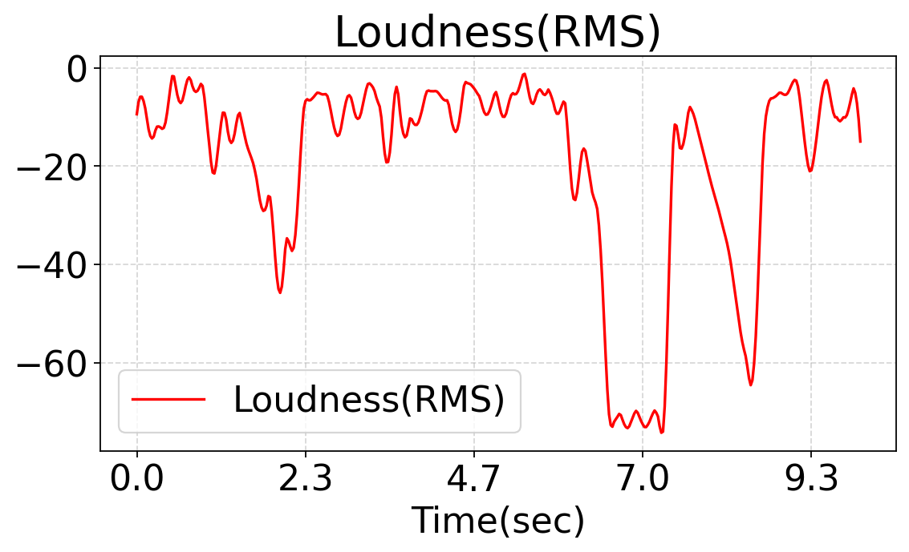 | |||||
| A humming noise is heard with dishes, pots, and pans being moved on a surface. | 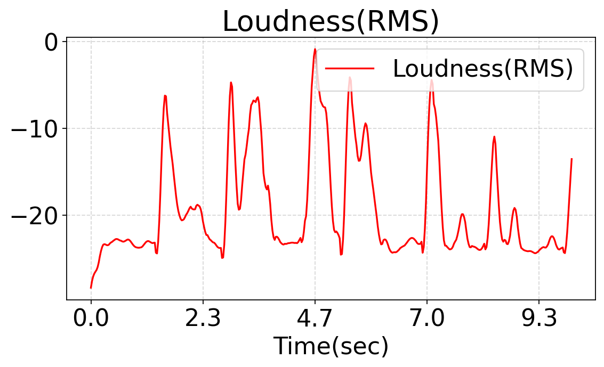 | |||||
| Dogs are whimpering, howling, and other domestic animals are heard. | 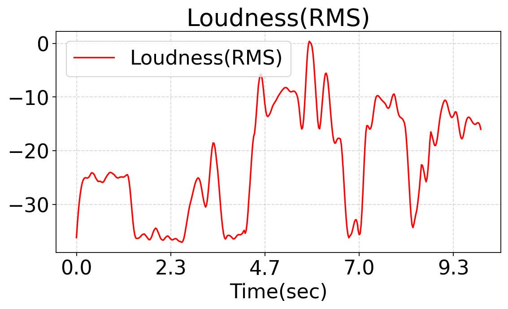 | |||||
| Conversations, laughter, coughing, and mechanisms are heard among human voices. | 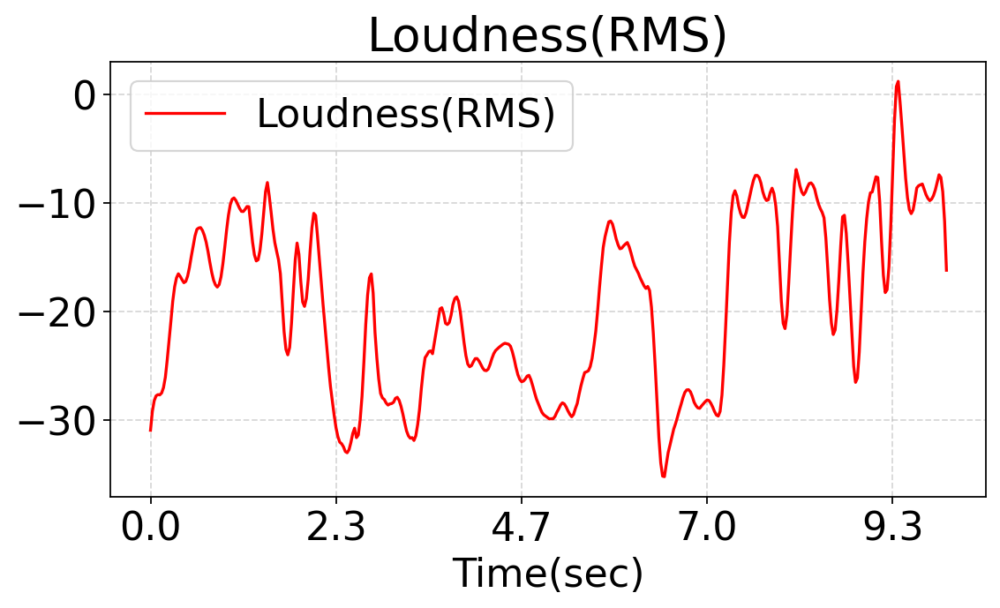 | |||||
| A man is speaking, breathing, writing, and making noises in a quiet room with a sine wave sound. | 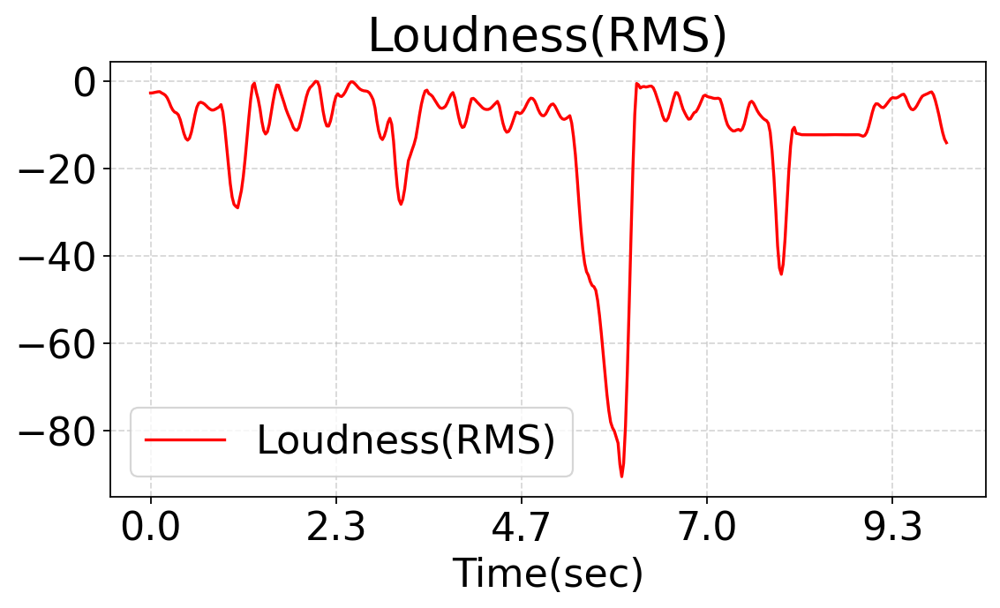 |
| Caption | Pitch | T2A-Adapter (Ours) |
T2A-ControlNet (Ours) |
FluxAudio | EzAudio-XL | GT |
|---|---|---|---|---|---|---|
| An alarm and beeping sounds alternate with music and ratcheting noises. | 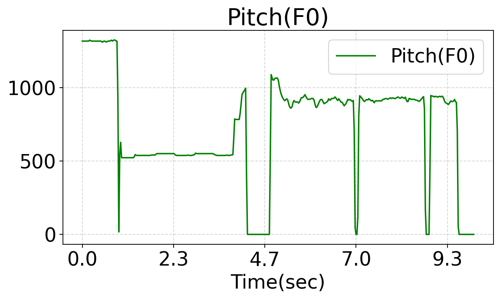 | |||||
| A woman speaks while using an electric toothbrush. | 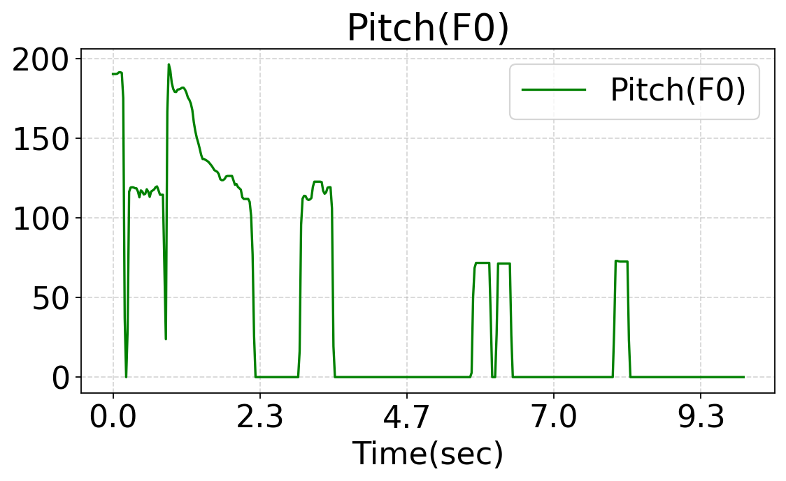 | |||||
| A man is speaking, breathing, and answering the phone while other sounds like clicking and thumping occur. | 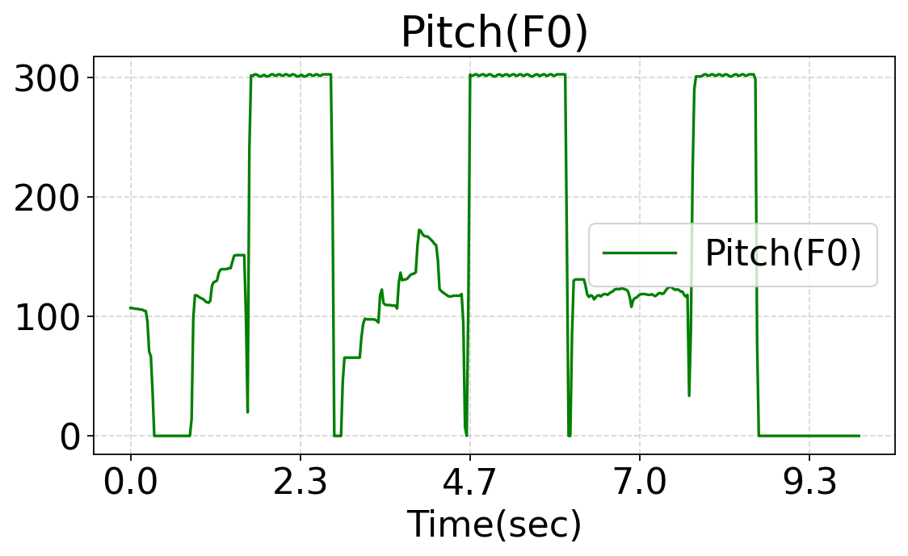 | |||||
| Various mechanisms make sounds in the background while a vacuum cleaner is used and there is female speech. | 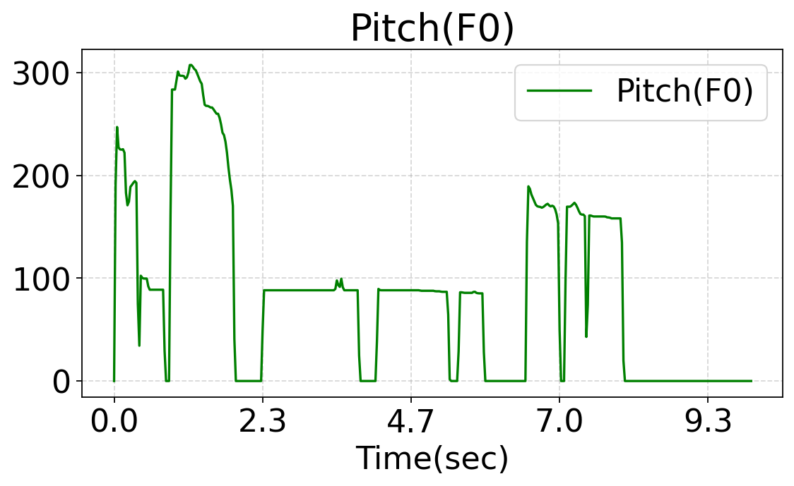 | |||||
| A fire alarm goes off while music and a female singer is playing. | 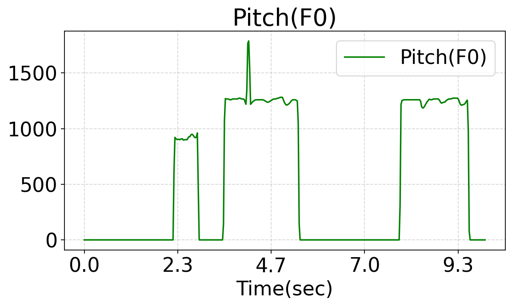 |